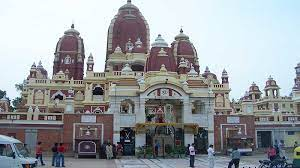
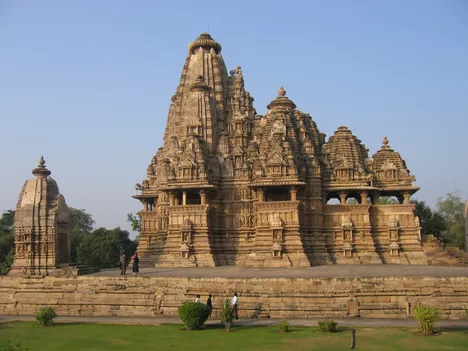
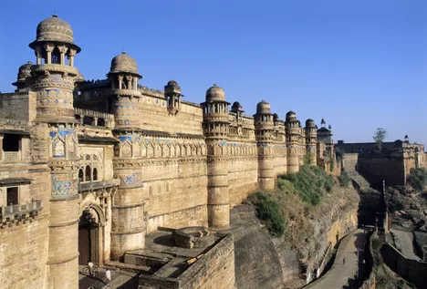
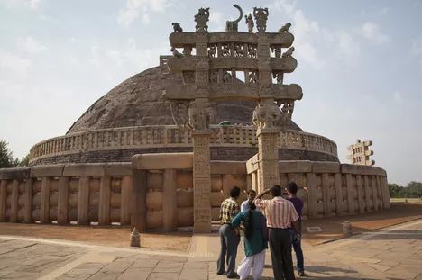

Bhopal
Madhya Pradesh's capital city, Bhopal, is perhaps best known for the tragic poisoning that occurred there in 1984 when a pesticide manufacturing plant leaked a mixture of deadly gases. The city has two main attractions -- mosques and museums. A particularly fascinating museum is the Tribal Museum, which showcases the tribes of the region and their lives. The Taj ul Masjid, Jama Masjid, and Moti Masjid are fine examples of the city's rich Islamic heritage. There are also two large lakes, the Upper Lake and Lower Lake, inside the city limits. One of India's little-known UNESCO World Heritage Sites, the Bhimbetka rock shelters, is situated about an hour from Bhopal inside Ratapani Wildlife Sanctuary. There are more than ancient 700 rock shelters there, dating all the way back to the Paleolithic age. Many of them have paintings on the walls
More
Khajuraho Erotic Temples
The Khajuraho erotic temples are one of the top historical destinations in India. If you want proof that the Kama Sutra originated in India, Khajuraho is the place to visit. There are over 20 temples abounding in erotic sculptures. However, more than that, they show a celebration of love, life, and worship.
More
Bandhavgarh National Park
Bandhavgarh and Kanha National Parks are among the top national parks in India. Bandhavgarh, while being relatively difficult to reach and costly to visit, is the best place to see tigers in the wild in India. The park features dense green valleys and rocky hill terrain, with an ancient fort. In addition to tigers, the park has a large array of wildlife including sloth bears, deer, leopards, jackals, and birds.
More
Gwalior
The great thing about Gwalior is that it's so accessible -- only two hours drive from Agra and the Taj Mahal in Uttar Pradesh. The main attraction the massive hilltop fort that towers over the city. Reputed to be one of the most invincible forts in India, its history stretches back over 1,000 years. Inside the fort walls are a number of palaces and temples, the highlight being the Man Mandir Palace. At the bottom of the fort is the Old Town of Gwalior, brimming with history and fine examples of Mughal architecture such as the Tomb of Tansen. The Tansen Music Festival is held at the tomb every December.
More
Sanchi Stupa
Sanchi Stupa, northeast of Bhopal, is one of India's oldest Buddhist monuments and a UNESCO World Heritage Site. It was built by Emperor Ashoka in 262 BC after he embraced Buddhism and nonviolence, following his particularly horrific invasion of Kalinga (present-day Odisha). The complex is made up of a number of other stupas, temples, monasteries, pillars and relics. There's also an archeological museum. Sanchi can be visited on a day trip from Bhopal, but it's worth staying in the area as it's a convenient base for numerous other side trips.